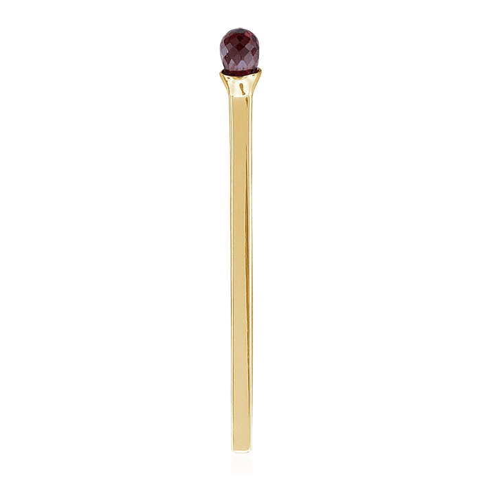

Теория игр представляет собой раздел математики, занимающейся исследованием вопросов поведения и разработкой оптимальных правил (стратегий) поведения каждого из участников в конфликтной ситуации.
Простейшие математические игры часто используют как задачи, в которых нужно найти выигрышную стратегию, либо одно положение перевести в другое.
Иногда задачи бывают весьма простыми, когда они решаются известными методами, такими как инвариант и раскраска.
В следующих задачах используется стратегия дополнение до фиксированного числа.
В данных задачах одинаковое решение, стратегия: сделайте так, чтобы противнику всегда доставалось число спичек, кратное трём.
В кучке лежит 10 спичек. Игроки по очереди берут спички из кучки. За один ход разрешается взять 1 или 2 спички. Проигрывает тот, кто не может сделать ход.

C помощью этой стратегиии в данной задаче выигрывает первый игрок
То же самое, но в кучке 12 спичек
В этой же задаче, не смотря на одинаковую стратегию, выигрывает второй игрок